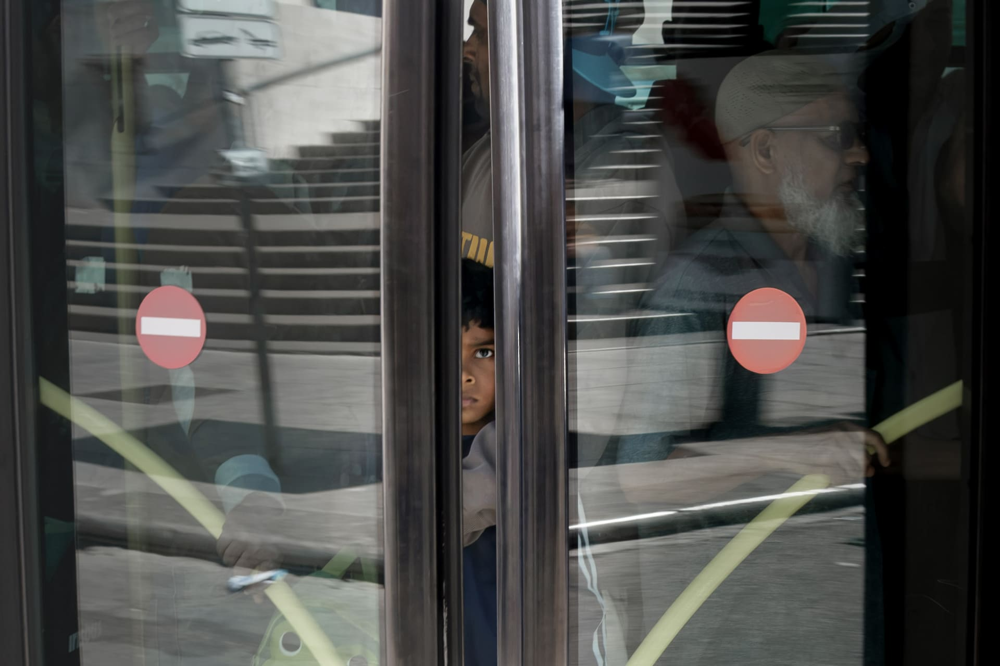

Serie
gente dei bus
Questo progetto di street si concentra su ciò che accade a bordo di autobus e tram e alle loro fermate: crocevia urbani attraversati senza sosta da vite, storie e destini diversi
2 scatti
Scorri ↓


Serie
Questo progetto di street si concentra su ciò che accade a bordo di autobus e tram e alle loro fermate: crocevia urbani attraversati senza sosta da vite, storie e destini diversi
2 scatti
Scorri ↓
